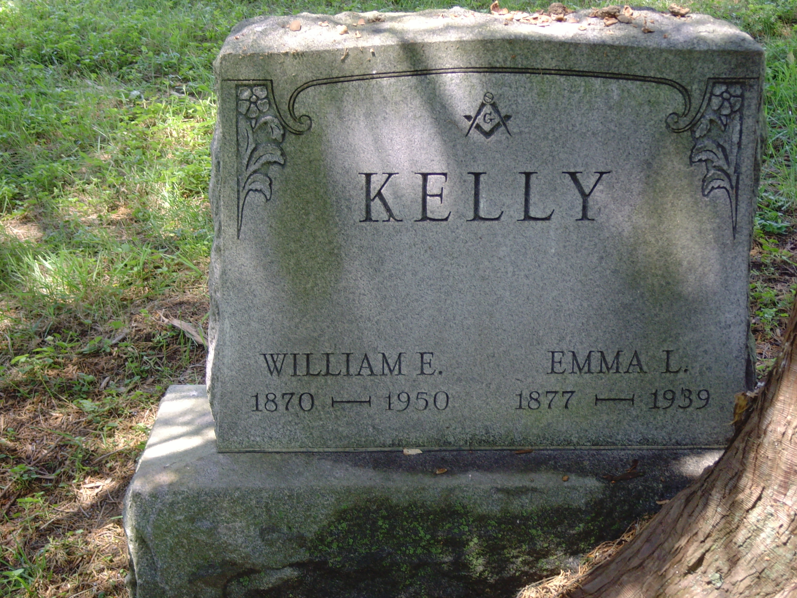

William Edward Kelly
1870–1950
Life Events
Born: April 6, 1870 — Deal Island, Somerset County, Maryland
Family
Spouse:
Children
Military Service
No military service information has been added.
Biography
William Edward Kelly was born on April 6, 1870, on Deal Island in Somerset County, Maryland, according to the United States Social Security Numerical Identification Files (NUMIDENT). An October 1942 Social Security record identifies him by his full name and records his birthplace.
William married Louisa Elizabeth Daniel, known as Emma. Her 1939 death certificate identifies her husband as William E. Kelley, reflecting an alternate spelling of the family surname.
By 1910, William and Emma were living with their children at 2014 Walbrook Avenue in Baltimore, Maryland, near Emma's father, James Fairfax Daniel, who lived at 2010 Walbrook Avenue.
William died on September 27, 1950, in Cambridge, Maryland. His death notice, published in The Baltimore Sun on September 30, 1950, identified him as the husband of the late Emma L. Kelly, née Daniels, and announced funeral services in Baltimore followed by interment at Woodlawn Cemetery. William and Emma share a gravestone at Woodlawn Cemetery bearing their names and years of birth and death.
Photos
No additional photographs have been added.
Grave & Burial

Sources
-
1910 United States Census — Daniel and Kelley Families
Type: censusThirteenth Census of the United States, 1910, Baltimore City, Maryland, enumerated April 22, 1910. James F. Daniel, age 54, resided at 2010 Walbrook Avenue with his wife, Mary C. Daniel, age 50, and their children James F. Daniel, age 24, Annie W. Daniel, age 22, and Wilson B. Daniel, age 12. James F. Daniel was recorded as a retail oyster dealer. His daughter Emma Daniel Kelley resided nearby at 2014 Walbrook Avenue with her husband and children. The neighboring households document the proximity of two generations of the Daniel family in Baltimore.
Location: Baltimore City, Maryland, United States
Supports: Residence of James F. Daniel Sr. at 2010 Walbrook Avenue, Baltimore, in 1910, Mary C. Daniel identified as wife of James F. Daniel, James F. Daniel Jr. identified as son, Annie W. Daniel identified as daughter, Wilson B. Daniel identified as son, Occupation of James F. Daniel Sr. as retail oyster dealer, Residence of Emma Daniel Kelley and her family at 2014 Walbrook Avenue, Baltimore, in 1910, Proximity of the Daniel and Kelley households in Baltimore
-
Obituary of William E. Kelly, 1950
Type: obituaryThe Baltimore Sun, September 30, 1950, death notice for William E. Kelly, who died in Cambridge, Maryland, on September 27, 1950. He is identified as the beloved husband of the late Emma L. Kelly (née Daniels). Funeral services were scheduled for September 30 at Loring Byers Home, 5005 Park Heights Avenue, Baltimore, with interment at Woodlawn Cemetery.
Location: Cambridge, Maryland
Supports: Death of William E. Kelly on September 27, 1950, Death in Cambridge, Maryland, Marriage to Emma L. Kelly, née Daniels, Burial at Woodlawn Cemetery, Baltimore